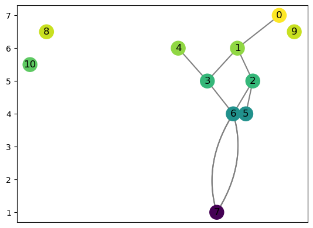
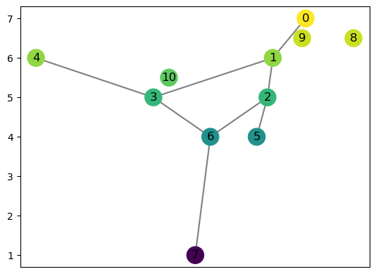
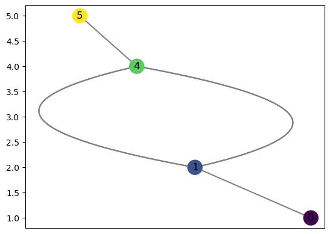
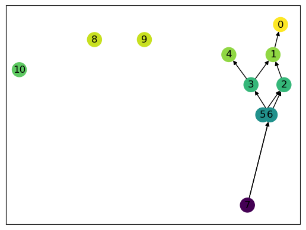
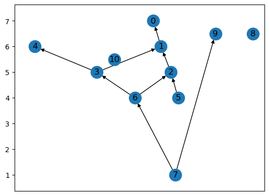
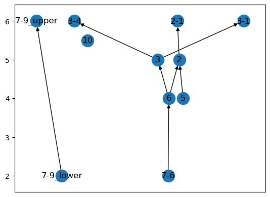
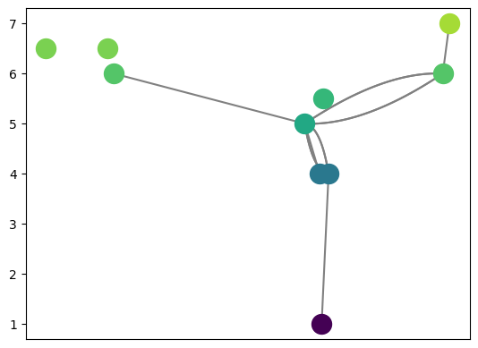
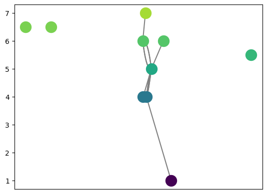

Sandbox for testing purposes
[2]:
from cereeberus import ReebGraph
from cereeberus.data import ex_graphs as ex_g
from cereeberus.data import ex_reebgraphs as ex_rg
import networkx as nx
[3]:
R = ex_rg.juggling_man()
R.add_edge(6,7)
[4]:
R.draw(cpx = 1)

[8]:
R = ex_rg.juggling_man(seed = 10)
R.draw()

[7]:
R = ex_rg.torus()
R.remove_all_regular_vertices()
R.draw(cpx = 17)

[15]:
# nx.draw_networkx_nodes(R, R.pos_f, node_color = R.f, node_size = 100, alpha = 1)
color_map = [R.f[v] for v in R.nodes]
# Some weird plotting to make the colorbar work.
pathcollection = nx.draw_networkx_nodes(R, R.pos_f, node_color=color_map)
nx.draw_networkx_labels(R, pos=R.pos_f, font_color='black')
nx.draw_networkx_edges(R, R.pos_f)
[15]:
[<matplotlib.patches.FancyArrowPatch at 0x12b30b5e0>,
<matplotlib.patches.FancyArrowPatch at 0x12b2cd0f0>,
<matplotlib.patches.FancyArrowPatch at 0x12b30bd60>,
<matplotlib.patches.FancyArrowPatch at 0x12b30bf70>,
<matplotlib.patches.FancyArrowPatch at 0x12b30be20>,
<matplotlib.patches.FancyArrowPatch at 0x12b32c3d0>,
<matplotlib.patches.FancyArrowPatch at 0x12b32c5e0>,
<matplotlib.patches.FancyArrowPatch at 0x12b32c7f0>,
<matplotlib.patches.FancyArrowPatch at 0x12b32ca00>]

[ ]:
[ ]:
[ ]:
[ ]:
[ ]:
[ ]:
[3]:
R.add_edge(7,9)
R.draw(with_labels=True)
[3]:
<Axes: >

[4]:
(1,2) in R.edges()
[4]:
False
[5]:
H = R.slice( 2,6,verbose=True)
H.draw_straight_line(with_labels=True)
Vertices (v,f(v)): [(2, 5), (3, 5), (5, 4), (6, 4), (10, 5.5)]
Edges: [(2, 1), (3, 1), (3, 4), (5, 2), (6, 2), (6, 3), (7, 6), (7, 9)]
adding edge with one endpoint outside slice: (2, 1)
Adding part of edge (2, 1) with function values (5, [1]) and 6
This should add edge 2-2-1 with function values 5 and 6
adding edge with one endpoint outside slice: (3, 1)
Adding part of edge (3, 1) with function values (5, [1]) and 6
This should add edge 3-3-1 with function values 5 and 6
adding edge with one endpoint outside slice: (3, 4)
Adding part of edge (3, 4) with function values (5, [4]) and 6
This should add edge 3-3-4 with function values 5 and 6
Adding edge entirely inside slice: (5, 2)
Adding edge entirely inside slice: (6, 2)
Adding edge entirely inside slice: (6, 3)
adding edge with one endpoint outside slice: (7, 6)
Adding part of edge (7, 6) with function values 1 and 4
This should add edge (7-6, 6) with function values 2 and 4
Adding edge with both endpoints outside slice: (7, 9)
[5]:
<Axes: >

[ ]:
[ ]:
[ ]:
[49]:
n = len(R.nodes)
m = len(R.edges)
print(f"number of vertices: {n}")
print(f"number of edges: {m}")
number of vertices: 11
number of edges: 8
[51]:
# going to collapse down to one node
u = 2
v = 3
# wlog we're going to get rid of v, and add all its edges to u
# get the edges of v
edges_in = R.in_edges(v)
print(f'Edges in: {edges_in}')
edges_out = R.out_edges(v)
print(f'Edges out: {edges_out}')
for e in edges_in:
R.add_edge(e[0], u)
for e in edges_out:
R.add_edge(u, e[1])
R.remove_node(v)
R.draw()
Edges in: [(6, 3)]
Edges out: [(3, 1), (3, 4)]
The positions are not set correctly. Setting them now.

[52]:
print(f"number of vertices: {len(R.nodes)} (old: {n})")
print(f"number of edges: {len(R.edges)} (old: {m})")
number of vertices: 10 (old: 11)
number of edges: 8 (old: 8)
[45]:
The positions are not set correctly. Setting them now.

[3]:
R.nodes
[3]:
NodeView((0, 1, 2, 3))
[4]:
R.add_edge(0,4)
---------------------------------------------------------------------------
KeyError Traceback (most recent call last)
File ~/anaconda3/lib/python3.10/site-packages/cereeberus/reeb/reebgraph.py:153, in ReebGraph.add_edge(self, u, v, reset_pos)
152 try:
--> 153 self.f[vertex]
154 except KeyError:
KeyError: 4
During handling of the above exception, another exception occurred:
ValueError Traceback (most recent call last)
Cell In[4], line 1
----> 1 R.add_edge(0,4)
File ~/anaconda3/lib/python3.10/site-packages/cereeberus/reeb/reebgraph.py:155, in ReebGraph.add_edge(self, u, v, reset_pos)
153 self.f[vertex]
154 except KeyError:
--> 155 raise ValueError(f'The vertex {vertex} must be in the Reeb graph to add an edge between them.')
157 if self.f[u] < self.f[v]:
158 edge = (u,v)
ValueError: The vertex 4 must be in the Reeb graph to add an edge between them.
[ ]:
[ ]: